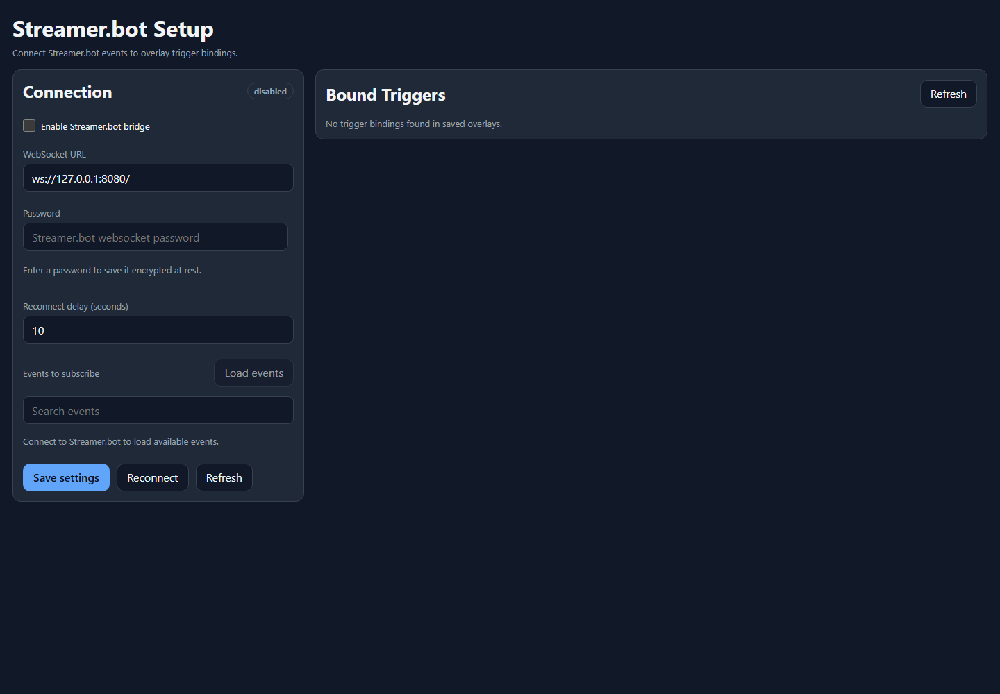

Integration
Streamer.bot Setup
Streamer.bot provides the events that NekoBot can bind to overlay boxes.
Connection

- Enable the Streamer.bot WebSocket server.
- Open NekoBot setup and choose Streamer.bot setup.
- Enter the host, port, and password if configured.
- Connect and subscribe to the event groups you want to use.
Triggers
Triggers can represent raw subscribed events, commands, or actions. Use Overlay Setup to bind a trigger to a box.
- Use chat-message triggers for regular chat overlays.
- Use command triggers for commands such as
!ttsor!clip. - Use action triggers when Streamer.bot actions should drive an overlay.